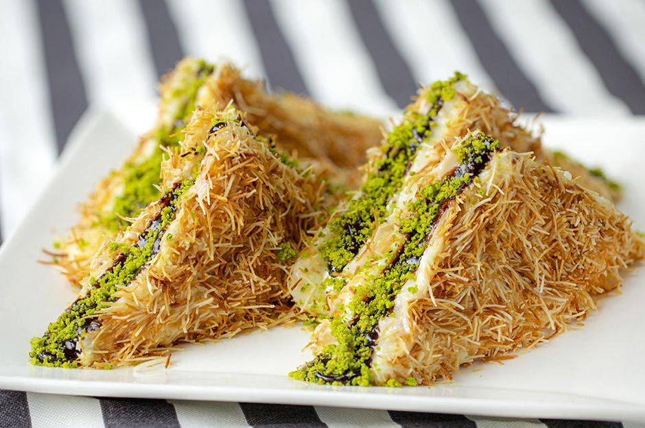
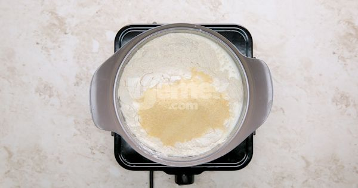
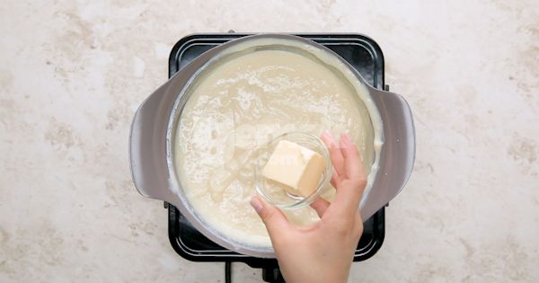
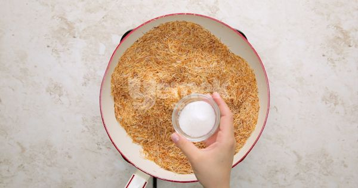
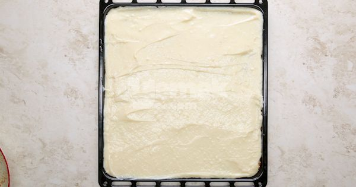
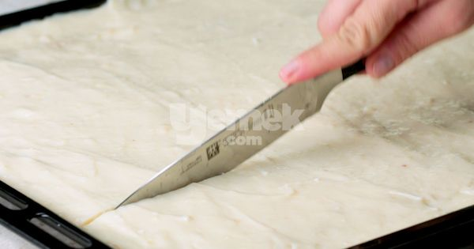
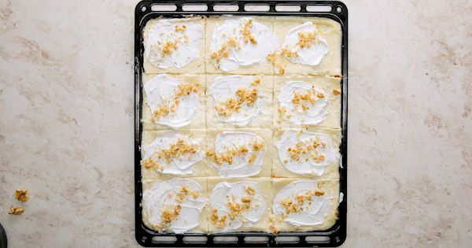
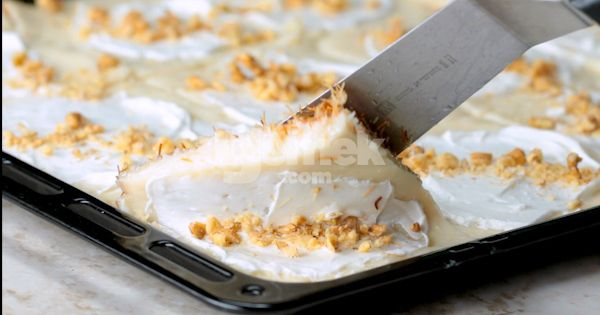
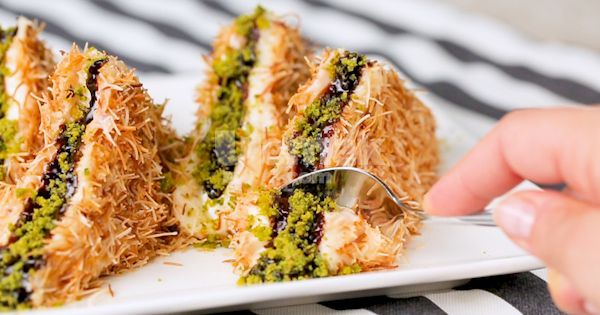

Damaktaki Şenlik: Çıtır Kadayıflı Üçgen Muhallebi Tarifi
anasayfa
tarif gönder
iletişim

Çıtır Kadayıflı Üçgen Muhallebi Tarifi İçin Malzemeler
3 çay bardağı un
5 yemek kaşığı irmik
1,5 yemek kaşığı tereyağı
2 yemek kaşığı toz şeker (kadayıfı kavurmak için)
1 su bardağı dövülmüş ceviz içi
Süslemek İçin;
Çıtır Kadayıflı Üçgen Muhallebi Tarifi Nasıl Yapılır??
'Aşama 1': Derin bir tencerede süt, toz şeker, un ve irmiği sürekli
olarak karıştırarak koyu kıvam alıncaya dek pişirin.

'Aşama 2': Muhallebi kıvamına gelen karışım kaynamaya başladıktan
2 dakika sonra vanilin ve tereyağını ekleyip tekrar karıştırın.
Tereyağı eridikten sonra ocaktan alın.

'Aşama 3': Bir tavaya kadayıf, tereyağı ve toz şekeri ekleyin.
Tereyağı eriyip, şeker eridikten sonra 3-4 dakika kavurup ocaktan alın.

'Aşama 4': Kadayıfı temiz bir fırın tepsisine yayın.

'Aşama 5': Üzerine hazırladığınız kremayı ekleyin ve
spatula yardımıyla yayıp 1 gece buzdolabında bekletin.

'Aşama 6': Islattığınız bir bıçakla muhallebiyi kare parçalar olacak şekilde kesin.

'Aşama 7': Hazırlamış olduğunuz krem şantiyi kare parçalara
yayın ve dövülmüş cevizi muhallebilerin orta kısmına serpiştirin.

'Aşama 8': Bir spatula yardımıyla kare muhallebi parçalarını üçgen şeklinde katlayın.

'Aşama 9': Üçgen muhallebileri bir tabağa dizin.
Orta kısmına çikolata sosu ve toz antep fıstığını serpiştirip soğuk olarak servis edin.

©her hakkı saklıdır®